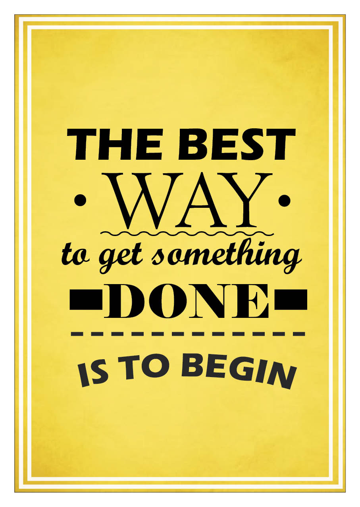
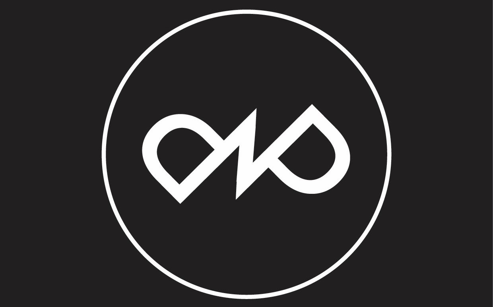

Moja Práca
Preskúmajte moje najnovšie projekty a grafické návrhy

Plagát - Amy
Tento plagát venovaný Amy Winehouse zdôrazňuje jej ikonický status pomocou minimalistickej kompozície. Červeno-čierna farebná paleta kontrastuje s čierno-bielou fotografiou, pričom typografia a citát „The voice of a generation“ podčiarkujú jej umelecké dedičstvo. Dizajn s retro nádychom odráža jej osobitý štýl a je ideálny pre výstavy, dokumenty či hudobné podujatia.

Plagát - Hokej
Plagát bol vytvorený na propagáciu hokejového zápasu a bol použitý ako oficiálny propagačný materiál, čím úspešne zaujal fanúšikov a zvýšil návštevnosť podujatia.

Plagát - Oasis
Tento plagát propaguje návrat legendárnej kapely Oasis s pútavým sloganom „The Return of Legends“. Dominantným vizuálom je mestská panoráma v atmosférickom večernom osvetlení, ktorá symbolizuje spojenie s rodným mestom kapely. Siluety dvoch postáv na popredí pridávajú záhadnosť a nostalgiu, pričom moderné logo kapely v strednej časti jasne signalizuje, že ide o veľkú udalosť.

Plagát - Motivation
Tento motivačný plagát bol vytvorený ako školské zadanie s cieľom precvičiť typografické zručnosti a dizajn. Dominantná fráza „The best way to get something done is to begin“ je zvýraznená pomocou kombinácie rôznych štýlov písma a veľkostí, ktoré dodávajú vizuálnu hierarchiu. Žlté pozadie so zamatovým gradientom vyžaruje pozitívnu energiu, zatiaľ čo jemné orámovanie dodáva dizajnu eleganciu.

Plagát - Tanec
Tento plagát propaguje spoločenské tance a zachytáva vášeň a eleganciu, ktorú tento štýl prináša. Dominantným vizuálom je ikonická dvojica známa z filmu. Plagát bol skutočne použitý ako oficiálny propagačný materiál na tanečné podujatie, kde úspešne prilákal tanečných nadšencov.

Logo - Multispark
Chceli sme zobraziť všetky oblasti multimedíi v jednom logu, toto logo sa bude používať pre môj vedľajší projekt.
- Biela šípka symbilizuje grafiku
- Hranaté zátvorky symbolizujú web
- Červená bodka symbolizuje nahrávanie videa
- Trojuholník symbilizuje play a to pre audio
- Štvorec symbolizuje zameriavač vo fotografovaní

Logo - PP
Toto logo bolo vytvorené pre môj ďalší vedľajší projekt a to robenie editov. V logu je dynamicky použitý pulz a dve písmená P ktoré označujú názov projektu

Web Design - Samuraj Sushi
Kompletný web dizajn pre reštauráciu špecializujúcu sa na sushi.

Videoklip - Basketbal
Dynamický videoklip zachytávajúci emócie a akciu basketbalového zápasu.
O mne
Ahoj, volám sa Tobias a som grafický dizajnér. Už od malička ma fascinovalo, ako dokáže dobrý dizajn rozprávať príbehy a vytvárať emócie. Každý projekt vnímam ako príležitosť ukázať svoju kreativitu a zároveň pomôcť klientom dosiahnuť ich ciele.
Špecializujem sa na tvorbu vizuálnej identity, branding, tlačové materiály a web dizajn. Môj prístup kombinuje moderné dizajnové trendy s funkčnosťou a praktickým využitím.
Verím, že dobrý dizajn by mal byť nielen esteticky príťažlivý, ale aj funkčný a účinný pri komunikácii posolstva. Svoju prácu vykonávam s vášňou a dôrazom na detail.
8+
Rokov skúseností
150+
Projektov
95%
Spokojných klientov
50+
Logo dizajnov
Moje zručnosti
Zistite viac o mojich zručnostiach
Adobe Photoshop
90%
Adobe Illustrator
85%
Adobe InDesign
80%
Adobe Premiere Pro
85%
Figma
75%
Služby
Čo pre vás môžem vytvoriť
Tvorba Loga
Jedinečné logo, ktoré reprezentuje vašu značku a vystihuje jej podstatu. Tvorím identitu, ktorá vás odlíši od konkurencie.
Viac informáciíBranding
Kompletná vizuálna identita vašej značky vrátane loga, farebnej schémy, typografie a marketingových materiálov.
Viac informáciíReklamné Materiály
Návrhy letákov, plagátov, brožúr a bannerov, ktoré efektívne komunikujú vaše posolstvo a oslovia cieľovú skupinu.
Viac informáciíGrafika pre Sociálne Siete
Poutavý obsah pre Facebook, Instagram a ďalšie platformy, ktorý zvýši vašu online prítomnosť a engažment.
Viac informáciíTvorba Tlačovín
Profesionálne tlačové materiály ako vizitky, hlavičkové papiere, brožúry a katalógy v najvyššej kvalite.
Viac informáciíWeb Dizajn
Moderné a použivateľsky prívetivé webové stránky, ktoré oslovia vašich návštevníkov a podporia vaše podnikanie.
Viac informáciíKontaktujte ma
Sledujte moju prácu a spojme sa na Instagrame
@tobias_design
Najjednoduchší spôsob ako ma kontaktovať je cez Instagram. Sledujte moju prácu, pošlite mi správu alebo ma označte vo svojich príspevkoch. Teším sa na našu spoluprácu!
Sledovať na Instagrame